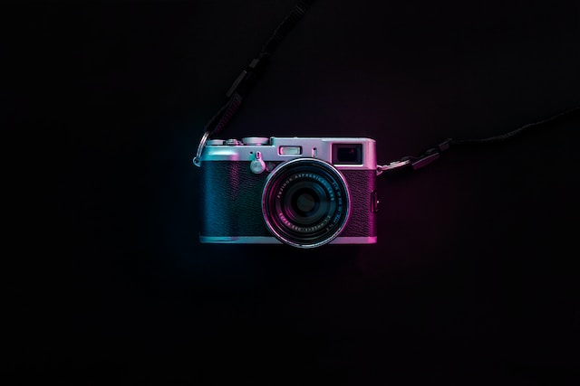

Cámaras Réflex

Las cámaras réflex de Canon ofrecen un rango dinámico amplio que conserva los detalles en las sombras oscuras y las áreas luminosas, ofrece un bajo nivel de ruido en imágenes directamente desde la cámara y logra una profundidad de campo reducida para retratos impresionantes. Están diseñadas para proporcionar resultados profesionales en cada disparo.
Ventajas Cámaras Reflex
- Una de las primeras ventajas que encontramos en las cámaras réflex es el hecho de que podremos utilizar el objetivo que necesitemos para una escena concreta, ya que hay multitud de ellos y todos intercambiables entre si, lo que nos aportará una gran versatilidad.
- Por lo general, el sensor óptico que incorporan las réflex suele ser mejor que el de las cámaras de fotos compactas. Esto nos permitirá captar más luz de forma más rápida y con una fidelidad de color superior a la del resto de sus competidoras.
- Otra de las grandes ventajas de las cámaras réflex radica en que su enfoque automático es mucho más rápido, lo que nos permitirá incrementar nuestra velocidad cuando tengamos que realizar fotografías en movimiento, por poner un ejemplo.
- Por último, pero no por ello menos importante, tenemos que destacar que, en este tipo de cámaras, tendremos un mayor control sobre los parámetros de la cámara . Es decir, podremos configurar nuestra cámara para cada foto y para cada situación. De esta forma, será más fácil que nunca plasmar nuestro enfoque artístico en cada fotografía que disparemos.
Cámaras Mirrorless

Nuestras cámaras mirrorless con objetivos intercambiables compactas y ligeras combinan lo mejor de las cámaras compactas y las réflex de Canon para ofrecer fotos y vídeos de excelente calidad. En nuestra gama se incluyen desde modelos APS-C con objetivos más pequeños hasta potentes modelos Full Frame donde prima la creatividad.
Ventajas Cámaras Mirrorless
- Imagen en tiempo real Este tipo de cámara no tiene un visor óptico, sino que cuenta con uno electrónico. Esto hace que sea posible captar imágenes en tiempo real. Al igual que observar su exposición, profundidad, brillo y contraste.
- Reducción de la trepidación Otro buen factor que contiene una cámara sin espejo, es que al no tener este componente, se es capaz de reducir la trepidación. Es decir, que con ella se disminuye el riesgo de que alguna fotografía salga movida u otro error de movimiento. Lo que es bueno cuando se quieren realizar tomas de acción o en la naturaleza.
- Gran calidad Las cámaras sin espejo se destacan por su gran resolución y rango dinámico. Algunas de estas cámaras hasta poseen un sensor APS-C. Esto significa que no importa el modelo por el que optes, con este tipo de dispositivo fotográfico obtendrás imágenes de calidad. Estas cámaras están diseñadas con sensores pequeños, que además, reducen el peso de la misma. Pero no significa que la calidad de imagen se pierda, todo lo contrario, es mayor. Esto debido a que recortan la distancia entre el objetivo de la cámara y el plano focal. Por lo que las fotografías salen con mayor nitidez.
- Ligereza en su cuerpo y objetivos Es un dispositivo fotográfico práctico y cómodo. Todo esto gracias a que su tamaño y peso es ligero, lo que significa que puede ser movilizado con tranquilidad. Asimismo, puede resultar un instrumento discreto para fotografiar en la calle o cuando estas de viaje. Del mismo modo, las cámaras sin espejo proporcionan objetivos o lentes pequeños y ligeros. Esto ayuda, igualmente, a ser transportados sin dificultad. Pero sobre todo, pueden ser usadas cómodamente y con ellas puedes lograr fotografías con mayor definición.
Cámaras compactas
Ideales para el uso diario, las cámaras digitales compactas de objetivo fijo ofrecen un diseño ligero y portátil, por lo que son perfectas para los que buscan una cámara todo en uno que les permita disparar en cualquier momento. En la gama de Canon, puedes encontrar un equipo para todas las necesidades, desde cámaras compactas con sensor de gran tamaño para expertos hasta cámaras sencillas para apuntar y disparar.
Ventajas Cámaras Compactas
- Primeramente el precio. Si todavía no sabes que te dedicaras a la fotografía o que este es un hobby en el cual estas dispuesto (a) a gastarte una pasta, mi consejo es que inviertas poco en el equipo.
- Tamaño Su tamaño es pequeño y puedes llevarla siempre contigo. Si no quieres cargar contigo una cámara más grande, con sus respectivos objetivos, quizás una compacta sea lo ideas para ti.
- No tendrás que cambiar el objetivo, super importante si te gusta la fotografía variada. Podrás realizar fotografía de calle y paisajes con un solo lente.
- Fácil de usar. Son intuitivas, la puedes usar sin tener muchas nociones de como se usa una cámara de fotos.
- Los modelos actuales realizan buena calidad de imagen. Los fabricantes de cámaras, están desarrollando modelos cuya calidad no tiene mucho que envidiar a los modelos de reflex entry level de hace unos años.
Formulario